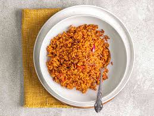

Home
Jollof Rice

Description
Jollof Rice is a West African dish made with rice, tomatoes, onions, and a blend of spices. It's a party favorite and a staple in many homes.
Ingredients
- 2 cups long grain rice
- 3 tomatoes
- 1 onion
- 2 tablespoons tomato paste
- Spices and oil
Steps
- Blend tomatoes and onions.
- Fry the mixture in oil and add tomato paste.
- Add seasoning and simmer.
- Add washed rice and water, then cook until soft.